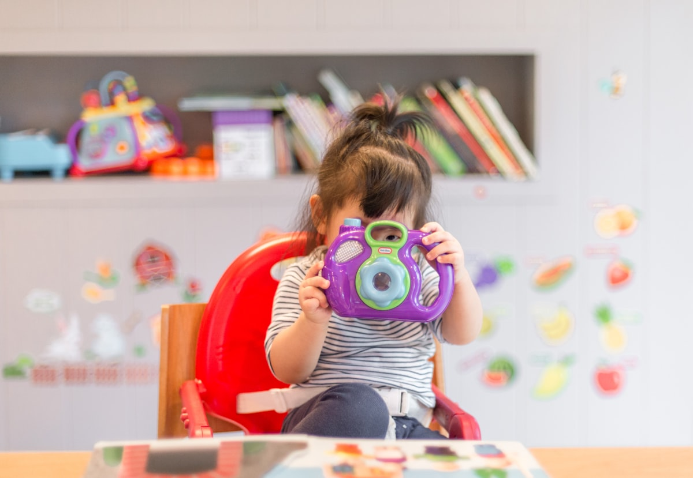

かみのて保育園は7:00〜20:00、かみのて今渡保育園は7:30〜19:30。早番も遅番も、ご家庭のはたらき方に合わせてお預かりします。
かみのて保育園に併設した病児保育室で、生後6ヵ月から小学校6年生までお預かりします。他の園や小学校に通うお子さまも利用できます。
英語・タガログ語・ビサヤ語・ポルトガル語に対応。外国にルーツのあるご家庭も安心して通えるよう、文化のちがいを前提にした保育をしています。

こどもは、教えられて育つのではなく、自分でためして育っていきます。わたしたちの仕事は、その「やってみたい」が生まれる場所をつくり、できるまで待つことだと考えています。
どちらも見学を受け付けています。


「今日はどうしても休めない」。そんな日に、専属の看護師と保育士がお子さまをお預かりします。生後6ヵ月から小学校6年生まで、他の園や小学校に通うお子さまもご利用いただけます。
定員1名・9:00〜17:00（月〜金）・1回2,000円。事前登録と、かかりつけ医の診療情報提供書が必要です。
2つの園は制度が異なり、申し込み先も違います。ご希望の園からお進みください。
自治体を通さず、園に直接お申し込みいただけます。お住まいの地域や勤務先を問わない地域枠のほか、提携企業にお勤めの方の企業枠、自社枠があり、保育料が異なります。入園料はいただきません。
可児市の認可保育園です。お申し込みは可児市役所 保育課で受け付けています。市役所から園の案内を受け取ったあと、来園のご予約をお願いします。保育料は市役所でご確認ください。
こどもの毎日を支えているのは、ここではたらく人たちです。どんな人が、どんな思いで働いているのか。一日の仕事の流れや、職員へのインタビューをまとめました。
こどもたちの過ごし方や、先生とのやりとり。実際に見ていただくのがいちばんです。
入園のご予定がなくても、ご相談だけでもかまいません。